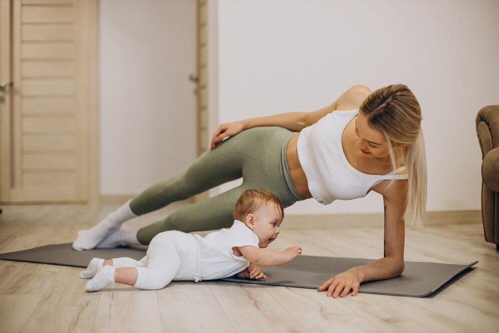
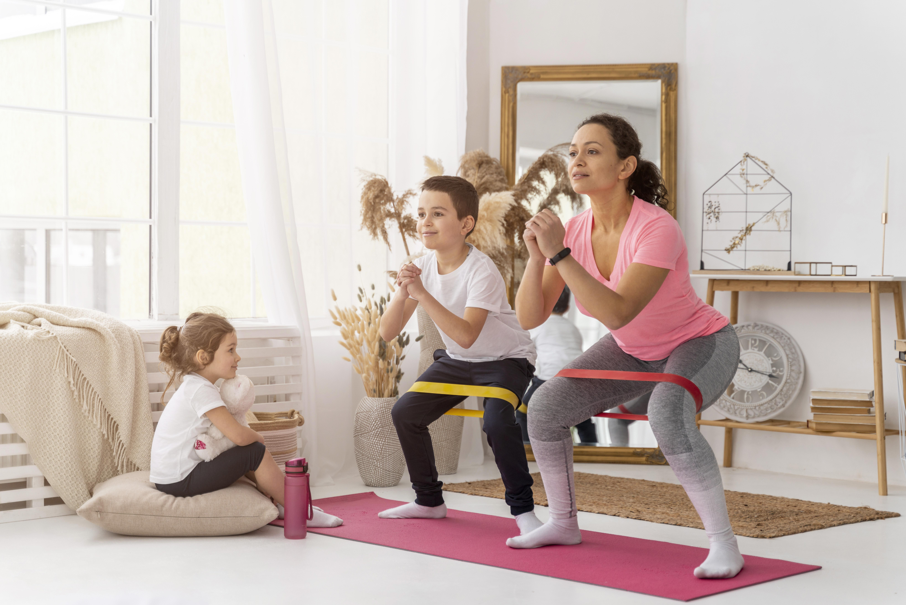

Nuestros Programas Postparto
Rutinas seguras y efectivas para recuperar tu bienestar después del parto.

Rutina Básica (2 semanas)
Ejercicios suaves para empezar a reconectar con tu cuerpo después del parto.
Ver más
Fortalecimiento Abdominal
Recupera tu zona media con ejercicios adaptados para diástasis abdominal.
Ver más

Movilidad y Respiración
Mejora tu postura y respiración para aliviar tensiones y recuperar energía.
Ver más

Desafío 21 Días
Una rutina diaria que combina ejercicios y hábitos para transformar tu rutina.
Ver más